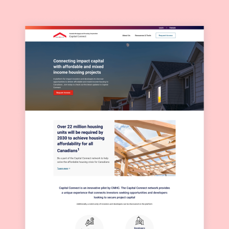
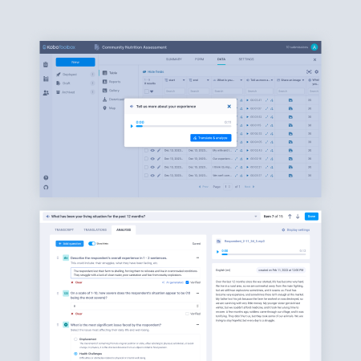
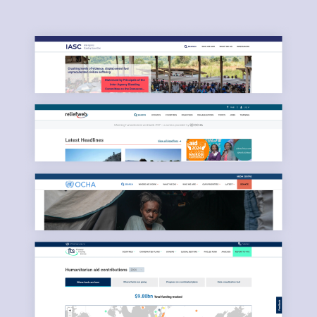

Iter Pictoris is the personal site of Ignacio Gimenez Rebollo. The following projects illustrate previous experience in the fields of product management, UX/UI design, user research and accessibility, information design and graphic design. Use the tags below to filter down projects.

Capital Connect platform
CMHC, 2024

KoboToolbox NLP and data analysis features
Kobo, 2023

TRACE Portal
Kobo + EAA, 2022

KoboToolbox website redesign
Kobo, 2021

COVID-19 Information Portal
Dahdaleh Institute, 2020

Cancer Screening Guide for First Nations
OCAD + Ontario Health, 2019

Digital Services Common Design
United Nations OCHA, 2019

Magnolia Foundation website
Fundación Magnolia, 2022